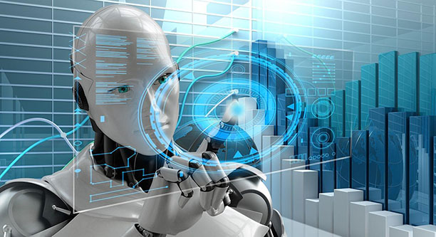

Главные новости мира технологий!

Компьютерное зрение. Это область искусственного интеллекта, связанная с анализом изображений и видео. Системы состоят из фото- или видеокамеры и специализированного программного обеспечения, которое идентифицирует и классифицирует объекты. Они способны анализировать образы (фотографии, картинки, видео, штрих-коды), а также лица и эмоции. По данным исследования TAdviser, с 2018 по 2023 год объем отечественного рынка решений в этой сфере увеличится в пять раз до 38 млрд рублей. Технологию можно использовать в вопросах безопасности, промышленности, медицины, торговли, образования, досуга, финансов, транспорта и многих других сферах.
CRISPR и генная терапия для увеличения продолжительности жизни. Сегодня на планете живет около 7,8 млрд человек, примерно 9% из которых — старше 65 лет. Однако уже сейчас существуют технологии, способные если не остановить процесс старения, то хотя бы замедлить его. Генная терапия — технология, с помощью которой генетическая конструкция вводится в определенные клетки тела, в которых гены отсутствуют или неправильно работают. Второй метод, CRISPR-Cas9, позволяет редактировать (например, вырезать и вставлять) последовательности ДНК в клетках. Он является нашим главным оружием в борьбе с генетическими заболеваниями. Что важно, эта технология становится все более дешевой, быстрой и простой в использовании.
Нанотехнологии. Это та «точка» материаловедения, где манипуляции становятся наноформатными: это в миллион раз меньше, чем размер муравья, в 8 тыс. раз меньше, чем эритроцит, и в 2,5 раза меньше, чем нить ДНК. Наноботы — это машины, которые могут самовоспроизводиться и разобрать на части любой материал, атом за атомом, и использовать это «сырье» для создания чего угодно. Прогресс в нано-мире был удивительно быстрым, и сейчас на рынке уже появилось множество нанопродуктов.
Подкожные микрочипы. По мере развития технологий устройства становятся все компактнее. Квинтэссенция тренда — подкожные микрочипы, которые могут (или скоро смогут) все. Так, с помощью вживленного чипа скорая помощь сможет, не теряя драгоценного времени, получить важную информацию о пациенте — полис медицинского страхования, принимаемые лекарства, аллергические реакции, группу крови и т.д. В будущем можно будет даже мониторить жизненно важные функции организма и получать точные данные в режиме реального времени. Они уже сейчас дают возможность управлять банковским счетом и смартфоном, оплачивать покупки и поездки на транспорте, регулировать открытие дверей в офисе или дома, добавлять клиентские карты спортзалов или карты лояльности магазинов. И количество решаемых ими повседневных задач будет только увеличиваться.